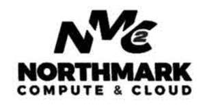

Trade Mark Journal No.2025/038 19 September 2025
UK00004261028 8 September 2025 (9,35,38,42)

- Class 9
- Downloadable computer software for managing cloud infrastructure and high-performance computing workloads; downloadable software for scheduling and provisioning computing resources; computer hardware and computer servers for use in data centers; downloadable computer software applications for monitoring and managing virtual machines, public clouds, and compute clusters; downloadable mobile software applications for monitoring and managing virtual machines, public clouds, and compute clusters .
- Class 35
- Business consulting services in the field of cloud computing, data center deployment, and digital infrastructure; commercial management and operation of IT and cloud service platforms for others; business advisory services related to cloud adoption, cost optimization, and vendor management; personnel placement and staffing services in the field of IT and software development .
- Class 38
- Provision of secure and scalable network infrastructure for data center and cloud environments; transmission of data via global computer networks; electronic transmission of data for high performance computing applications; cloud connectivity services; providing virtual private network (VPN) services; services related to public cloud peering points; telecommunications routing and junction services .
- Class 42
- Infrastructure as a service (IAAS) services, namely, hosting servers for use by others and providing temporary virtual use by others of graphics processing units; Infrastructure as a service (IAAS) services, namely, hosting software for operating virtual servers for use by others; Technical support services, namely, remote and on-site infrastructure management services for monitoring, administration and management of public and private cloud computing IT and application systems; Consulting services in the field of cloud computing; Providing virtual computer systems and virtual computer environments through cloud computing; Software as a service (SaaS) services featuring cloud computing software for electronic storage of data; Software as a service (SaaS) services featuring software for managing software application deployments and scaling based on usage; Software as a service (SaaS) services featuring software for management of capacity and usage of servers and graphics processing units; computer services, namely, cloud hosting provider services; computer services, namely, provisioning virtual computer systems and virtual computer environments for others and providing computer software maintenance, data encryption, and monitoring to ensure proper functioning therefor; provision of high-performance computing as a service (HPCaaS) featuring cloud computing software for electronic storage of data, cloud computing software for managing software application deployments and scaling based on usage, and cloud computing software for management of capacity and usage of servers and graphics processing units; providing virtual computer systems and virtual computer environments for machine learning, artificial intelligence, scientific research, and simulation workloads; design and development of computer hardware and software for high-performance computing; cloud computing featuring software for use in virtual computer systems and virtual computer environments; platform as a service (PaaS) featuring computer software platforms for virtual computer systems and virtual computer environments; design, development, and operation of custom software applications; IT consulting services relating to installation, maintenance and repair of computer software; providing technical support, namely, technical advice in the field of cloud computing and data center infrastructure; providing online non-downloadable computer software for managing cloud infrastructure and high performance computing workloads; providing online non-downloadable software for scheduling and provisioning computing resources; providing online non-downloadable computer software applications for monitoring and managing virtual machines, public clouds, and compute clusters .
ARCTIQ SERVICES LLP
Representative: Jones Day